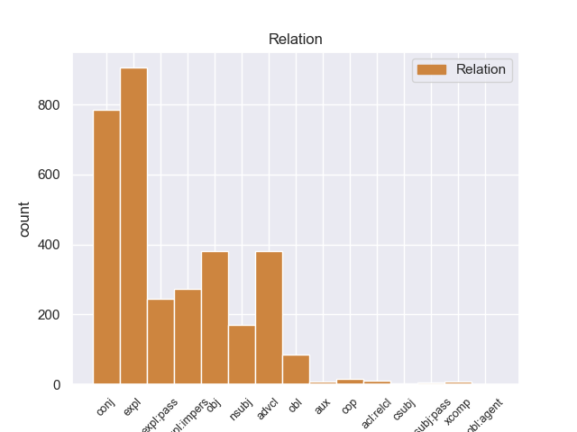
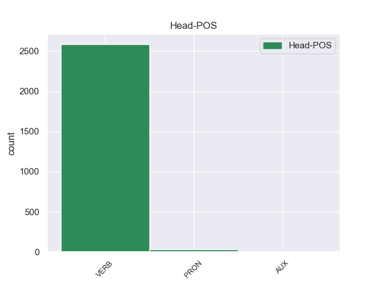

Distribution of features within this leaf



Agreement Rules sorted by frequency.
- When the dependent token is the expletive(expl) of the head token,
1 Quando _ _ _ _ 0 _ _ _
2 il _ _ _ _ 0 _ _ _
3 terremoto _ _ _ _ 0 _ _ _
4 è _ _ _ _ 0 _ _ _
5 forte _ _ _ _ 0 _ _ _
6 , _ _ _ _ 0 _ _ _
7 si si PRON PC Clitic=Yes|Person=3|PronType=Prs 8 expl 8:expl _
8 rovinano rovinare VERB V Mood=Ind|Number=Plur|Person=3|Tense=Pres|VerbForm=Fin 0 _ _ _
9 o _ _ _ _ 0 _ _ _
10 crollano _ _ _ _ 0 _ _ _
11 anche _ _ _ _ 0 _ _ _
12 le _ _ _ _ 0 _ _ _
13 case _ _ _ _ 0 _ _ _
14 e _ _ _ _ 0 _ _ _
15 i _ _ _ _ 0 _ _ _
16 palazzi _ _ _ _ 0 _ _ _
17 . _ _ _ _ 0 _ _ _
1 Quando _ _ _ _ 0 _ _ _
2 il _ _ _ _ 0 _ _ _
3 terremoto _ _ _ _ 0 _ _ _
4 è _ _ _ _ 0 _ _ _
5 forte _ _ _ _ 0 _ _ _
6 , _ _ _ _ 0 _ _ _
7 si _ _ _ _ 0 _ _ _
8 rovinano rovinare VERB V Mood=Ind|Number=Plur|Person=3|Tense=Pres|VerbForm=Fin 0 _ _ _
9 o _ _ _ _ 0 _ _ _
10 crollano crollare VERB V Mood=Ind|Number=Plur|Person=3|Tense=Pres|VerbForm=Fin 8 conj 8:conj:o _
11 anche _ _ _ _ 0 _ _ _
12 le _ _ _ _ 0 _ _ _
13 case _ _ _ _ 0 _ _ _
14 e _ _ _ _ 0 _ _ _
15 i _ _ _ _ 0 _ _ _
16 palazzi _ _ _ _ 0 _ _ _
17 . _ _ _ _ 0 _ _ _
1 Ogni _ _ _ _ 0 _ _ _
2 volta _ _ _ _ 0 _ _ _
3 che _ _ _ _ 0 _ _ _
4 dice _ _ _ _ 0 _ _ _
5 una _ _ _ _ 0 _ _ _
6 bugia _ _ _ _ 0 _ _ _
7 il _ _ _ _ 0 _ _ _
8 suo _ _ _ _ 0 _ _ _
9 naso _ _ _ _ 0 _ _ _
10 si si PRON PC Clitic=Yes|Person=3|PronType=Prs 11 expl:impers 11:expl:impers _
11 allunga allungare VERB V Mood=Ind|Number=Sing|Person=3|Tense=Pres|VerbForm=Fin 0 _ _ _
12 . _ _ _ _ 0 _ _ _
1 Le _ _ _ _ 0 _ _ _
2 gare _ _ _ _ 0 _ _ _
3 che _ _ _ _ 0 _ _ _
4 si si PRON PC Clitic=Yes|Person=3|PronType=Prs 5 expl:pass 5:expl:pass _
5 fanno fare VERB V Mood=Ind|Number=Plur|Person=3|Tense=Pres|VerbForm=Fin 0 _ _ _
6 in _ _ _ _ 0 _ _ _
7 il _ _ _ _ 0 _ _ _
8 mare _ _ _ _ 0 _ _ _
9 o _ _ _ _ 0 _ _ _
10 in _ _ _ _ 0 _ _ _
11 i _ _ _ _ 0 _ _ _
12 laghi _ _ _ _ 0 _ _ _
13 , _ _ _ _ 0 _ _ _
14 sono _ _ _ _ 0 _ _ _
15 molto _ _ _ _ 0 _ _ _
16 lunghe _ _ _ _ 0 _ _ _
17 . _ _ _ _ 0 _ _ _
1 I _ _ _ _ 0 _ _ _
2 Rapid _ _ _ _ 0 _ _ _
3 Eyes _ _ _ _ 0 _ _ _
4 Movements _ _ _ _ 0 _ _ _
5 sono _ _ _ _ 0 _ _ _
6 i _ _ _ _ 0 _ _ _
7 movimenti _ _ _ _ 0 _ _ _
8 che _ _ _ _ 0 _ _ _
9 i _ _ _ _ 0 _ _ _
10 nostri _ _ _ _ 0 _ _ _
11 occhi _ _ _ _ 0 _ _ _
12 fanno _ _ _ _ 0 _ _ _
13 quando _ _ _ _ 0 _ _ _
14 noi noi PRON PE Number=Plur|Person=1|PronType=Prs 15 nsubj 15:nsubj|18:nsubj _
15 dormiamo dormire VERB V Mood=Ind|Number=Plur|Person=1|Tense=Pres|VerbForm=Fin 0 _ _ _
16 profondamente _ _ _ _ 0 _ _ _
17 e _ _ _ _ 0 _ _ _
18 sogniamo _ _ _ _ 0 _ _ _
19 . _ _ _ _ 0 _ _ _
1 I _ _ _ _ 0 _ _ _
2 personaggi _ _ _ _ 0 _ _ _
3 di _ _ _ _ 0 _ _ _
4 i _ _ _ _ 0 _ _ _
5 fumetti _ _ _ _ 0 _ _ _
6 usano _ _ _ _ 0 _ _ _
7 la _ _ _ _ 0 _ _ _
8 parola _ _ _ _ 0 _ _ _
9 “ _ _ _ _ 0 _ _ _
10 Ouch _ _ _ _ 0 _ _ _
11 ” _ _ _ _ 0 _ _ _
12 quando _ _ _ _ 0 _ _ _
13 vanno _ _ _ _ 0 _ _ _
14 a _ _ _ _ 0 _ _ _
15 sbattere _ _ _ _ 0 _ _ _
16 contro _ _ _ _ 0 _ _ _
17 qualcosa _ _ _ _ 0 _ _ _
18 e _ _ _ _ 0 _ _ _
19 si si PRON PC Clitic=Yes|Person=3|PronType=Prs 20 iobj 20:iobj _
20 fanno fare VERB V Mood=Ind|Number=Plur|Person=3|Tense=Pres|VerbForm=Fin 0 _ _ _
21 male _ _ _ _ 0 _ _ _
22 . _ _ _ _ 0 _ _ _
1 Questa _ _ _ _ 0 _ _ _
2 è _ _ _ _ 0 _ _ _
3 carne _ _ _ _ 0 _ _ _
4 di _ _ _ _ 0 _ _ _
5 balena _ _ _ _ 0 _ _ _
6 , _ _ _ _ 0 _ _ _
7 che _ _ _ _ 0 _ _ _
8 ho _ _ _ _ 0 _ _ _
9 fotografato _ _ _ _ 0 _ _ _
10 in _ _ _ _ 0 _ _ _
11 un _ _ _ _ 0 _ _ _
12 negozio _ _ _ _ 0 _ _ _
13 di _ _ _ _ 0 _ _ _
14 alimentari _ _ _ _ 0 _ _ _
15 a _ _ _ _ 0 _ _ _
16 Tokyo _ _ _ _ 0 _ _ _
17 - _ _ _ _ 0 _ _ _
18 ma _ _ _ _ 0 _ _ _
19 lo lo PRON PC Clitic=Yes|Gender=Masc|Number=Sing|Person=3|PronType=Prs 0 _ _ _
20 è essere AUX V Mood=Ind|Number=Sing|Person=3|Tense=Pres|VerbForm=Fin 19 cop 19:cop _
21 davvero _ _ _ _ 0 _ _ _
22 ? _ _ _ _ 0 _ _ _
1 Si _ _ _ _ 0 _ _ _
2 vede _ _ _ _ 0 _ _ _
3 che _ _ _ _ 0 _ _ _
4 è _ _ _ _ 0 _ _ _
5 roba _ _ _ _ 0 _ _ _
6 di _ _ _ _ 0 _ _ _
7 un _ _ _ _ 0 _ _ _
8 servo _ _ _ _ 0 _ _ _
9 di _ _ _ _ 0 _ _ _
10 Dio _ _ _ _ 0 _ _ _
11 , _ _ _ _ 0 _ _ _
12 e _ _ _ _ 0 _ _ _
13 conviene _ _ _ _ 0 _ _ _
14 lavorare _ _ _ _ 0 _ _ _
15 per _ _ _ _ 0 _ _ _
16 lui lui PRON PE Gender=Masc|Number=Sing|Person=3|PronType=Prs 0 _ _ _
17 che _ _ _ _ 0 _ _ _
18 ci _ _ _ _ 0 _ _ _
19 ha avere VERB V Mood=Ind|Number=Sing|Person=3|Tense=Pres|VerbForm=Fin 16 acl:relcl 16:acl:relcl _
20 in _ _ _ _ 0 _ _ _
21 mano _ _ _ _ 0 _ _ _
22 la _ _ _ _ 0 _ _ _
23 messa _ _ _ _ 0 _ _ _
24 e _ _ _ _ 0 _ _ _
25 la _ _ _ _ 0 _ _ _
26 benedizione _ _ _ _ 0 _ _ _
27 ! _ _ _ _ 0 _ _ _
1 Ma _ _ _ _ 0 _ _ _
2 un _ _ _ _ 0 _ _ _
3 altro _ _ _ _ 0 _ _ _
4 , _ _ _ _ 0 _ _ _
5 meno _ _ _ _ 0 _ _ _
6 ampiamente _ _ _ _ 0 _ _ _
7 discusso _ _ _ _ 0 _ _ _
8 determinante _ _ _ _ 0 _ _ _
9 sociale _ _ _ _ 0 _ _ _
10 - _ _ _ _ 0 _ _ _
11 la _ _ _ _ 0 _ _ _
12 nutrizione _ _ _ _ 0 _ _ _
13 materna _ _ _ _ 0 _ _ _
14 - _ _ _ _ 0 _ _ _
15 potrebbe potere AUX VM Mood=Cnd|Number=Sing|Person=3|Tense=Pres|VerbForm=Fin 17 aux 17:aux _
16 esser _ _ _ _ 0 _ _ _
17 lo lo PRON PC Clitic=Yes|Gender=Masc|Number=Sing|Person=3|PronType=Prs 0 _ _ _
18 . _ _ _ _ 0 _ _ _
1 Essa essa PRON PE Gender=Fem|Number=Sing|Person=3|PronType=Prs 3 nsubj:pass 3:nsubj:pass _
2 si _ _ _ _ 0 _ _ _
3 applica applicare VERB V Mood=Ind|Number=Sing|Person=3|Tense=Pres|VerbForm=Fin 0 _ _ _
4 altresì _ _ _ _ 0 _ _ _
5 a _ _ _ _ 0 _ _ _
6 i _ _ _ _ 0 _ _ _
7 trasporti _ _ _ _ 0 _ _ _
8 con _ _ _ _ 0 _ _ _
9 aeromobile _ _ _ _ 0 _ _ _
10 effettuati _ _ _ _ 0 _ _ _
11 a _ _ _ _ 0 _ _ _
12 titolo _ _ _ _ 0 _ _ _
13 gratuito _ _ _ _ 0 _ _ _
14 da _ _ _ _ 0 _ _ _
15 un' _ _ _ _ 0 _ _ _
16 impresa _ _ _ _ 0 _ _ _
17 di _ _ _ _ 0 _ _ _
18 trasporto _ _ _ _ 0 _ _ _
19 aereo _ _ _ _ 0 _ _ _
20 . _ _ _ _ 0 _ _ _
1 " _ _ _ _ 0 _ _ _
2 È essere VERB V Mood=Ind|Number=Sing|Person=3|Tense=Pres|VerbForm=Fin 0 _ _ _
3 d' _ _ _ _ 0 _ _ _
4 estate _ _ _ _ 0 _ _ _
5 con _ _ _ _ 0 _ _ _
6 il _ _ _ _ 0 _ _ _
7 gran _ _ _ _ 0 _ _ _
8 caldo _ _ _ _ 0 _ _ _
9 che _ _ _ _ 0 _ _ _
10 diventa diventare VERB V Mood=Ind|Number=Sing|Person=3|Tense=Pres|VerbForm=Fin 2 csubj 2:csubj _
11 veramente _ _ _ _ 0 _ _ _
12 duro _ _ _ _ 0 _ _ _
13 fare _ _ _ _ 0 _ _ _
14 la _ _ _ _ 0 _ _ _
15 guardia _ _ _ _ 0 _ _ _
16 . _ _ _ _ 0 _ _ _
1 Spero _ _ _ _ 0 _ _ _
2 che _ _ _ _ 0 _ _ _
3 Nanni _ _ _ _ 0 _ _ _
4 smetta _ _ _ _ 0 _ _ _
5 di _ _ _ _ 0 _ _ _
6 esser _ _ _ _ 0 _ _ _
7 lo _ _ _ _ 0 _ _ _
8 , _ _ _ _ 0 _ _ _
9 e _ _ _ _ 0 _ _ _
10 quando _ _ _ _ 0 _ _ _
11 parla _ _ _ _ 0 _ _ _
12 di _ _ _ _ 0 _ _ _
13 la _ _ _ _ 0 _ _ _
14 sua _ _ _ _ 0 _ _ _
15 malattia _ _ _ _ 0 _ _ _
16 facendo _ _ _ _ 0 _ _ _
17 ne _ _ _ _ 0 _ _ _
18 una _ _ _ _ 0 _ _ _
19 commedia _ _ _ _ 0 _ _ _
20 a _ _ _ _ 0 _ _ _
21 la _ _ _ _ 0 _ _ _
22 Lubitsch _ _ _ _ 0 _ _ _
23 riesce riuscire VERB V Mood=Ind|Number=Sing|Person=3|Tense=Pres|VerbForm=Fin 0 _ _ _
24 magnificamente _ _ _ _ 0 _ _ _
25 a _ _ _ _ 0 _ _ _
26 non _ _ _ _ 0 _ _ _
27 esser _ _ _ _ 0 _ _ _
28 lo lo PRON PC Clitic=Yes|Gender=Masc|Number=Sing|Person=3|PronType=Prs 23 xcomp 23:xcomp _
29 . _ _ _ _ 0 _ _ _
Disagree Examples:
1 Mi mi PRON PC Clitic=Yes|Number=Sing|Person=1|PronType=Prs 2 iobj 2:iobj _
2 viene venire VERB V Mood=Ind|Number=Sing|Person=3|Tense=Pres|VerbForm=Fin 0 _ _ _
3 in _ _ _ _ 0 _ _ _
4 mente _ _ _ _ 0 _ _ _
5 una _ _ _ _ 0 _ _ _
6 mia _ _ _ _ 0 _ _ _
7 vecchia _ _ _ _ 0 _ _ _
8 cameriera _ _ _ _ 0 _ _ _
9 che _ _ _ _ 0 _ _ _
10 , _ _ _ _ 0 _ _ _
11 guardando _ _ _ _ 0 _ _ _
12 i _ _ _ _ 0 _ _ _
13 quadri _ _ _ _ 0 _ _ _
14 di _ _ _ _ 0 _ _ _
15 i _ _ _ _ 0 _ _ _
16 maggiori _ _ _ _ 0 _ _ _
17 artisti _ _ _ _ 0 _ _ _
18 contemporanei _ _ _ _ 0 _ _ _
19 , _ _ _ _ 0 _ _ _
20 da _ _ _ _ 0 _ _ _
21 Van _ _ _ _ 0 _ _ _
22 Gogh _ _ _ _ 0 _ _ _
23 a _ _ _ _ 0 _ _ _
24 Chagall _ _ _ _ 0 _ _ _
25 , _ _ _ _ 0 _ _ _
26 a _ _ _ _ 0 _ _ _
27 Modigliani _ _ _ _ 0 _ _ _
28 , _ _ _ _ 0 _ _ _
29 a _ _ _ _ 0 _ _ _
30 Picasso _ _ _ _ 0 _ _ _
31 , _ _ _ _ 0 _ _ _
32 diceva _ _ _ _ 0 _ _ _
33 che _ _ _ _ 0 _ _ _
34 sarebbe _ _ _ _ 0 _ _ _
35 stata _ _ _ _ 0 _ _ _
36 capace _ _ _ _ 0 _ _ _
37 di _ _ _ _ 0 _ _ _
38 far _ _ _ _ 0 _ _ _
39 li _ _ _ _ 0 _ _ _
40 anche _ _ _ _ 0 _ _ _
41 lei _ _ _ _ 0 _ _ _
42 . _ _ _ _ 0 _ _ _
1 mi mi PRON PC Clitic=Yes|Number=Sing|Person=1|PronType=Prs 2 iobj 2:iobj _
2 fecero fare VERB V Mood=Ind|Number=Plur|Person=3|Tense=Past|VerbForm=Fin 0 _ _ _
3 pagare _ _ _ _ 0 _ _ _
4 gli _ _ _ _ 0 _ _ _
5 hezbollah _ _ _ _ 0 _ _ _
6 per _ _ _ _ 0 _ _ _
7 liberare _ _ _ _ 0 _ _ _
8 due _ _ _ _ 0 _ _ _
9 ostaggi _ _ _ _ 0 _ _ _
10 in _ _ _ _ 0 _ _ _
11 Libano _ _ _ _ 0 _ _ _
12 . _ _ _ _ 0 _ _ _
1 Questo _ _ _ _ 0 _ _ _
2 è _ _ _ _ 0 _ _ _
3 il _ _ _ _ 0 _ _ _
4 messaggio _ _ _ _ 0 _ _ _
5 che _ _ _ _ 0 _ _ _
6 ci ci PRON PC Clitic=Yes|Number=Plur|Person=1|PronType=Prs 7 iobj 7:iobj _
7 viene venire VERB V Mood=Ind|Number=Sing|Person=3|Tense=Pres|VerbForm=Fin 0 _ _ _
8 da _ _ _ _ 0 _ _ _
9 il _ _ _ _ 0 _ _ _
10 mattatoio _ _ _ _ 0 _ _ _
11 a _ _ _ _ 0 _ _ _
12 il _ _ _ _ 0 _ _ _
13 di _ _ _ _ 0 _ _ _
14 là _ _ _ _ 0 _ _ _
15 di _ _ _ _ 0 _ _ _
16 il _ _ _ _ 0 _ _ _
17 mare _ _ _ _ 0 _ _ _
18 : _ _ _ _ 0 _ _ _
1 " _ _ _ _ 0 _ _ _
2 Mercoledì _ _ _ _ 0 _ _ _
3 arriviamo arrivare VERB V Mood=Ind|Number=Plur|Person=1|Tense=Pres|VerbForm=Fin 0 _ _ _
4 tutti _ _ _ _ 0 _ _ _
5 , _ _ _ _ 0 _ _ _
6 io _ _ _ _ 0 _ _ _
7 , _ _ _ _ 0 _ _ _
8 Noella _ _ _ _ 0 _ _ _
9 , _ _ _ _ 0 _ _ _
10 i _ _ _ _ 0 _ _ _
11 bambini _ _ _ _ 0 _ _ _
12 , _ _ _ _ 0 _ _ _
13 basta bastare VERB V Mood=Ind|Number=Sing|Person=3|Tense=Pres|VerbForm=Fin 3 conj 3:conj _
14 Africa _ _ _ _ 0 _ _ _
15 ... _ _ _ _ 0 _ _ _
16 " _ _ _ _ 0 _ _ _
17 . _ _ _ _ 0 _ _ _
1 " _ _ _ _ 0 _ _ _
2 Non _ _ _ _ 0 _ _ _
3 ce _ _ _ _ 0 _ _ _
4 l' _ _ _ _ 0 _ _ _
5 ho _ _ _ _ 0 _ _ _
6 con _ _ _ _ 0 _ _ _
7 te _ _ _ _ 0 _ _ _
8 , _ _ _ _ 0 _ _ _
9 ma _ _ _ _ 0 _ _ _
10 con _ _ _ _ 0 _ _ _
11 chi _ _ _ _ 0 _ _ _
12 ti ti PRON PC Clitic=Yes|Number=Sing|Person=2|PronType=Prs 13 iobj 13:iobj _
13 sta stare VERB V Mood=Ind|Number=Sing|Person=3|Tense=Pres|VerbForm=Fin 0 _ _ _
14 accanto _ _ _ _ 0 _ _ _
15 ... _ _ _ _ 0 _ _ _
16 " _ _ _ _ 0 _ _ _
17 . _ _ _ _ 0 _ _ _